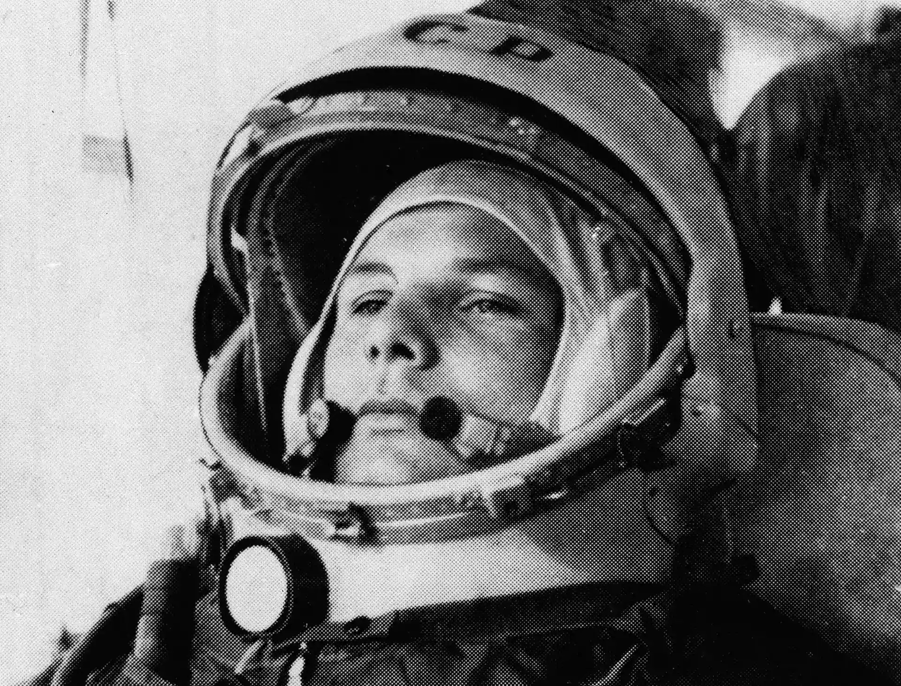
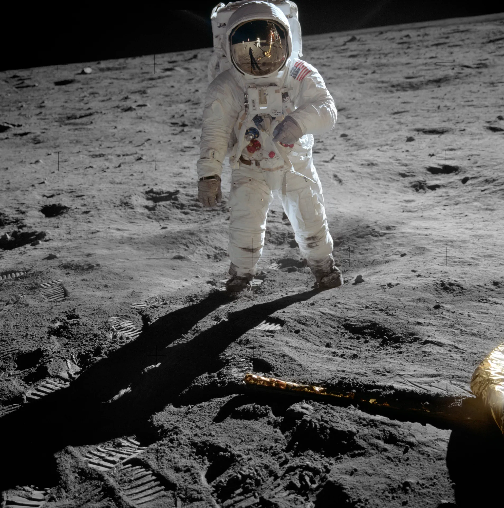
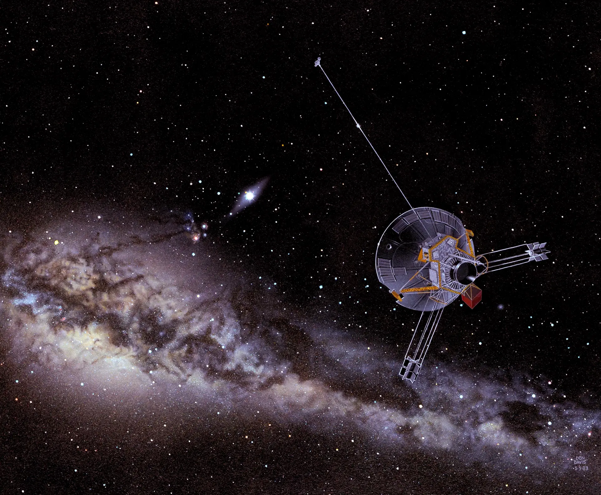
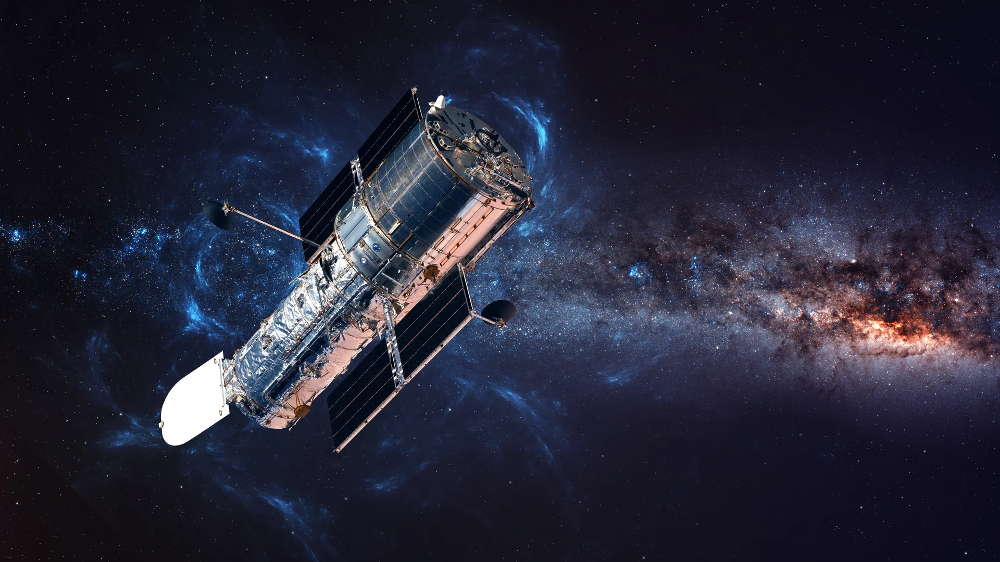
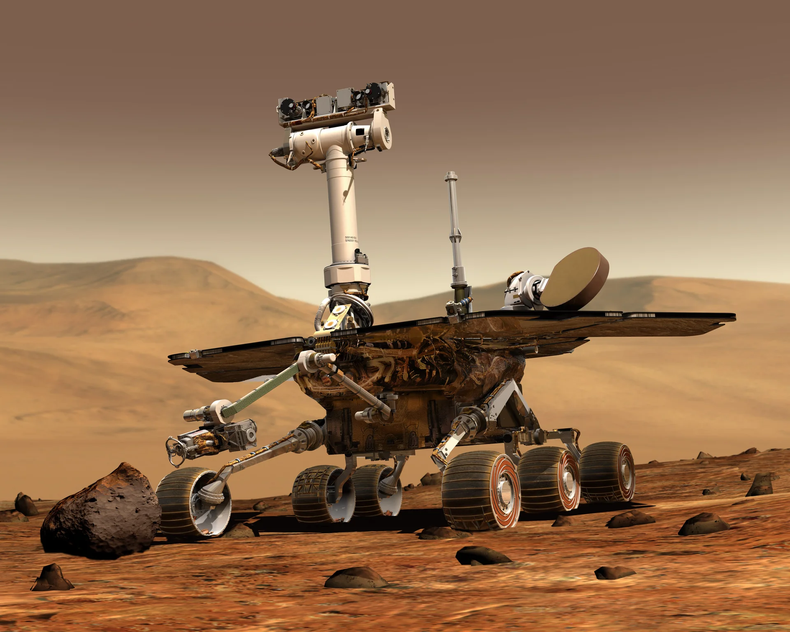
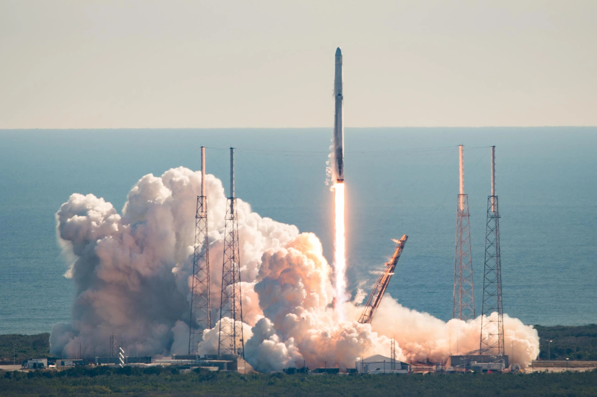
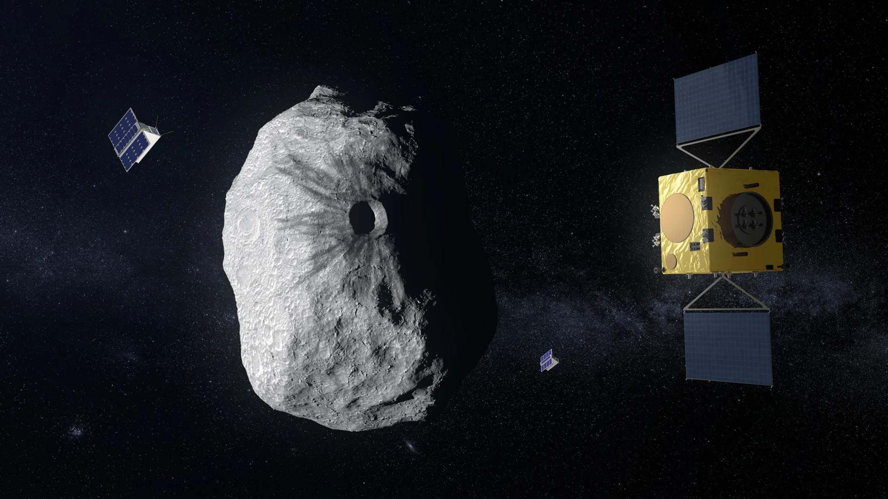

1961
Első ember az űrben

Yuri Gagarin, az első ember az űrben.
1969
Holdra szállás

Neil Armstrong és Buzz Aldrin történelmi küldetése.
1983
Naprendszer elhagyása

A Pioneer-10 űrszonda sikeresen elhagyta a naprendszert.
1990
Hubble teleszkóp

A Hubble űrteleszkóp felbocsátása, amely forradalmasította a csillagászatot.
2004
Marskutató program

A Mars Exploration Rover marskutató programban a NASA 2003-ban két űrszondát küldött a Mars felszínére.
2008
SpaceX rakétakilövés

A SpaceX első rakétakilövése (Falcon 1).
2015
Zöldségtermesztés az űrben

Az első emberi fogyasztásra alkalmas zöldség, amelyet az űrben termesztettek.
2024
Hera misszió

Az ESA bolygóközi védelemre szánt küldetése.